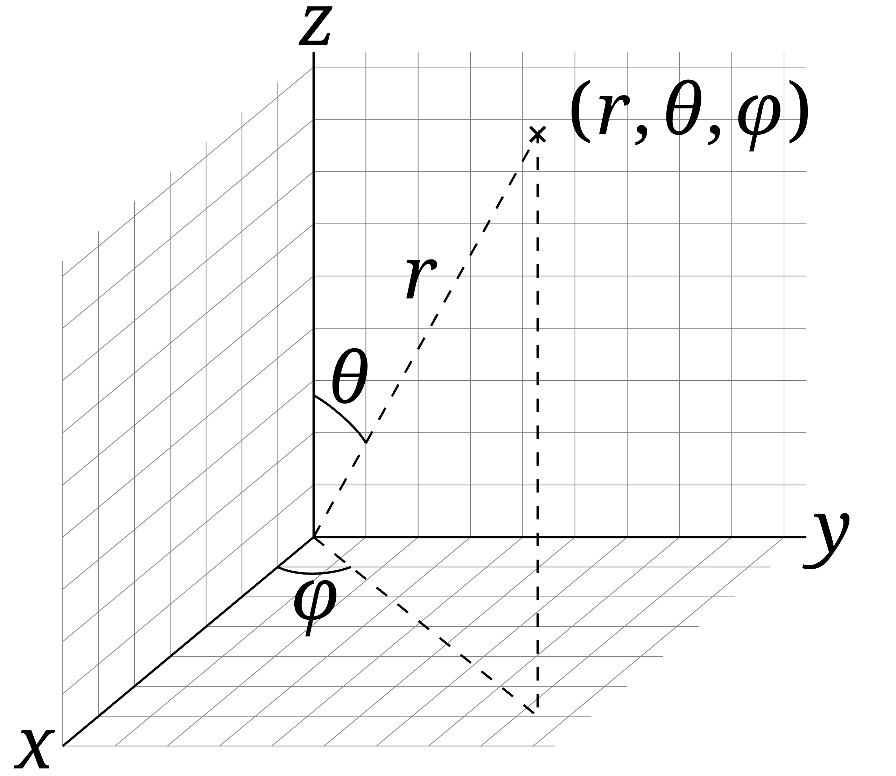

This tool allows you to visualise the geographical spread of WCA competitions you’ve attended. By entering your WCA ID, you can see markers representing each competition location on an interactive 3D globe. The tool calculates and displays the centroid of all your competitions, showing the average geographical center of your competition history inside the globe. Scroll below to see how it works!
This tool visualises your competition history on an interactive 3D globe and calculates the centroid of all competition locations. Here's how it works:
We first fetch the latitude and longitude of each competition a competitor has attended using the WCA API. By entering a WCA ID, we retrieve the competition data and extract the geographical coordinates.
const wcaApiUrl = `https://www.worldcubeassociation.org/api/v0/persons/${wcaId}/competitions`;
fetch(wcaApiUrl)
.then(response => response.json())
.then(data => {
const competitions = data.competitions;
// Extract latitude and longitude
competitions.forEach(comp => {
const lat = comp.latitude_degrees;
const lon = comp.longitude_degrees;
// Further processing...
});
})
.catch(error => {
console.error('Error fetching competition data:', error);
});
The geographic coordinate system (GCS) describes points on the Earth's surface via a tuple of latitude and longitude, \(\left(\text{lat}, \text{lng}\right)\). The origin, i.e.\(\left(0^{\circ}, 0^{\circ}\right)\) lies in the Gulf of Guinea off the west coast of Africa. In this definition \(0^{\circ}\) latitude is the equator and \(0^{\circ}\) longitude is the Prime Meridian which passes through Greenwich, London, UK. As it is much more mathematically amenable, we first convert these coordinates in to spherical coordinates. We take the latitude (\(\text{lat}\)) and longitude (\(\text{lng}\)) of each competition location and convert them into spherical angles using the following equations:
\(\phi = 90^\circ - \text{lat}\)
\(\theta = \text{lng} + 180^\circ\)
The first angle, \(\phi\), is the polar angle and is measured from the positive \(z\)-axis to the radial line, \(r\). The second angle, \(\phi\), is the azimuthal angle and is measured between the orthogonal projection of the radial line \(r\) onto the reference \(xy\)-plane. One can see where these definitions come from in the diagram below. The equations above are just a transformation between where the angular origins are set in the geographic coordinate system (GCS), verses the spherical coordinate system.
Next, we convert these spherical coordinates, (\(r, \theta, \phi\)), to Cartesian coordinates, (\(x, y, z\)), using the following equations:
\(x = r \sin(\theta) \cos(\phi)\)
\(y = r \sin(\theta) \sin(\phi)\)
\(z = r \cos(\theta)\)
These equations can be seen from simple triginometry in the diagram above. To simplify computation, we normalise the radius of the Earth, \(r\), to \(1\). Hence, the transformation we'll use is
\(x = \sin(\theta) \cos(\phi)\)
\(y = \sin(\theta) \sin(\phi)\)
\(z = \cos(\theta)\)
Now, we can compute a (normalised) vector from the center of the Earth to each competition location (\(\mathbf{c_{i}}\)).
\(\mathbf{c_{i}} = \langle x_{i}, y_{i}, z_{i} \rangle = \langle \sin(\theta_{i})\cos(\phi_{i}), sin(\theta_{i})\sin(\phi_{i}), \cos(\theta_{i})\rangle\)
We compute the arithmetic mean of all competition vectors to find the centroid vector, \(\mathbf{C}\)
\( \mathbf{C} = \frac{1}{n} \sum_{i=1}^{n} \mathbf{c_{i}} \)
\( \mathbf{C} = \frac{1}{n} \sum_{i=1}^{n} \langle x_{i}, y_{i}, z_{i} \rangle \)
\( \mathbf{C} = \langle \frac{1}{n}\sum_{i=1}^{n} x_{i}, \frac{1}{n}\sum_{i=1}^{n} y_{i}, \frac{1}{n}\sum_{i=1}^{n} z_{i} \rangle \)
where \(n\) is the number of competitions. This vector is then plotted inside the interative globe.
To find the normalised distance from the centroid to the center of the Earth (radii ratio), we use the Euclidean norm on \(\mathbf{C}\)
\(\text{normalised distance} = \lVert C \rVert = \sqrt{x_{C}^2 + y_{C}^2 + z_{C}^2}\)
where
\(x_{C} = \frac{1}{n}\sum_{i=1}^{n} x_{i}\)
\(y_{C} = \frac{1}{n}\sum_{i=1}^{n} y_{i}\)
\(z_{C} = \frac{1}{n}\sum_{i=1}^{n} z_{i}\)
To find the actual distance (in km) between the center of the Earth and the centroid, we multiply this normalised distance by the radius of the Earth, \(r_e = 6371\) km.
\(\text{distance} = r_{e} \times \text{normalised distance}\)